Zur Transformation der Differentialgleichung (9.79a) in die Normalform der linearen partiellen Differentialgleichungen 2. Ordnung gibt es die folgenden Möglichkeiten:
- 1. Transformation in die Normalform
- Die Differentialgleichung (9.79a) kann durch die Einführung neuer unabhängiger Veränderlicher
in Übereinstimmung mit dem Vorzeichen der Diskriminante (9.79b) auf eine der folgenden drei Normalformen gebracht werden:
| 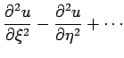 |
= |
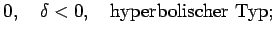 |
(9.81b) |
| 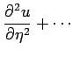 |
= |
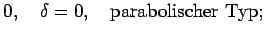 |
(9.81c) |
| 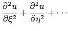 |
= |
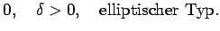 |
(9.81d) |
Glieder, die keine partiellen Ableitungen 2. Ordnung der unbekannten Funktion enthalten, sind durch Punkte angedeutet.
- 2. Transformation in die Normalform (9.81b) beim hyperbolischen Typ
- Wenn im hyperbolischen Fall zwei Charakteristikenscharen als Koordinatenlinienscharen im neuen Koordinatensystem (9.81a) gewählt werden, d.h., wenn für die Gleichungen der Charakteristikenscharen 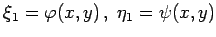 mit 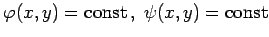 gesetzt wird, dann geht (9.79a) über in
Diese Form heißt ebenfalls Normalform der Differentialgleichung vom hyperbolischen Typ. Von hier gelangt man zur Normalform (9.81b) mit Hilfe der Substitution
- 3. Transformation in die Normalform (9.81c) beim parabolischen Typ
- Für die Schar 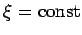 wird die einzige in diesem Falle gegebene Charakteristikenschar gewählt, wobei für
 eine beliebige Funktion von x und y gewählt werden kann, die aber nicht von
eine beliebige Funktion von x und y gewählt werden kann, die aber nicht von  abhängen darf.
abhängen darf.
- 4. Transformation in die Normalform (9.81d) beim elliptischen Typ
- Wenn die Koeffizienten A(x,y),B(x,y),C(x,y) analytische Funktionen sind, dann definiert die Gleichung der Charakteristiken im elliptischen Falle zwei konjugiert komplexe Scharen von Kurven 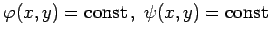. Wird 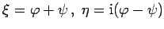 gesetzt, dann geht die Gleichung in die Normalform (9.81d) über.